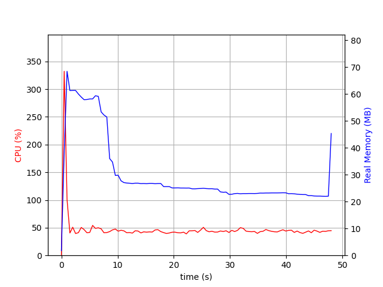

Record Resource Usage of Single Process
Introduction
On Linux & Mac, we can use an inbuilt top command line tool to monitor the resource usage of a single process in real time.
# On Linux, for a given pid $ top -p 1234 # On Mac, for a given pid $ top -pid 1234
In this article, we will see how to record and plot resource usage of a single process using top and a Python package called psrecord1.
Record Resource Usage
In some cases, we need to record the resource usage of a process to use it later. For example, we can use this data to find out the peak resource usage of a process. For this, we can use top to log resource usage into a text file.
# On Linux, for a given pid $ top -p 1234 -b -d 1 > top.log # On Mac, for a given pid $ top -l 0 -s 1 -pid 32515 | awk 'NR%13==0; fflush(stdout)' > top.log
Once we have the log file, we can view the raw data or we can plot the resource usage by using tools like gnuplot or matplotlib.
Instead of using top command, we can use psrecord to record the resource usage of a process. psrecord is a Python package that can be installed all using pip.
$ python -m pip install psrecord
Once installed, we can use psrecord to record the resource usage of a process.
# record resource usage of a process with pid 1234 $ psrecord 1234 --log top.log # start and record resource usage of a process $ psrecord python script.py --plot graph.png
We can view the raw data in the log file.
# view raw data $ head top.log $ head a.txt # Elapsed time CPU (%) Real (MB) Virtual (MB) 0.000 0.000 5.000 399461.438 0.000 93.700 5.000 399461.438 0.000 96.300 5.000 399461.438 0.000 91.900 5.000 399461.438
Here is the generated graph.

Conclusion
In this article, we have seen how to record and plot resource usage of a single process using top(inbuilt tool), psrecord(3rd party package).
Need further help with this? Feel free to send a message.